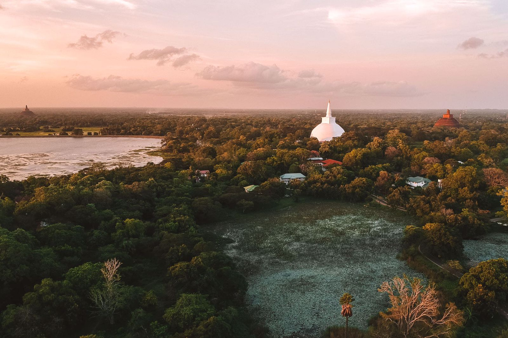
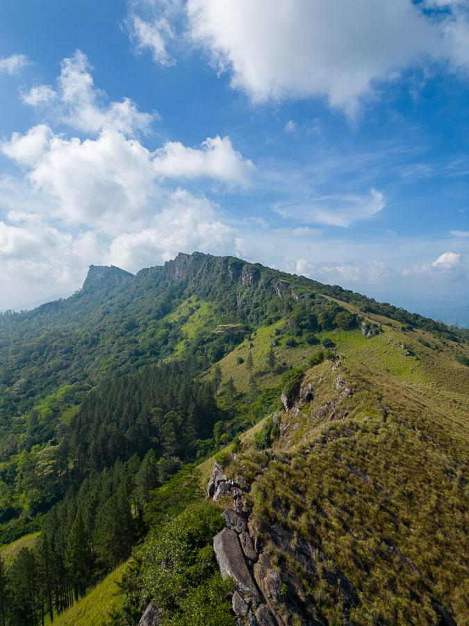

Cultural Trail
Duration: 10 Days
Explore Sri Lanka’s heritage sites, ancient temples, and traditional villages to experience the rich cultural history and customs.
Itinerary
- Day 1: Arrival in Colombo and orientation.
- Day 2: Visit to Anuradhapura's ancient ruins.
- Day 3: Mihintale pilgrimage site and village stay.
- Day 4: Explore the sacred city of Polonnaruwa.
- Day 5: Sigiriya Rock Fortress and frescoes.
- Day 6: Dambulla Cave Temple and spice garden tour.
- Day 7: Kandy Temple of the Tooth and cultural dance show.
- Day 8: Traditional arts and crafts workshop in Kandy.
- Day 9: Visit tea plantations and temples in Nuwara Eliya.
- Day 10: Return to Colombo for shopping and departure.
Cultural Experiences
- Learn ancient rituals and Buddhist customs.
- Participate in Kandyan dance and drumming.
- Enjoy traditional Sri Lankan village meals.
- Experience temple festivals (seasonal).
Gallery



Travel Tips
- Wear modest clothing when visiting temples.
- Respect local customs and silence during rituals.
- Bring a reusable water bottle and sunscreen.
- Engage with locals for a more authentic experience.